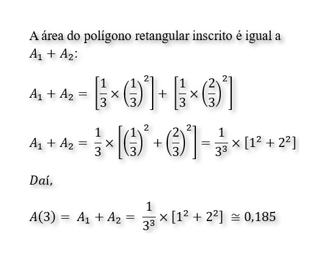

A parábola será dividida em 3 partes iguais. Quantos retângulos serão formados?
Qual é a área do polígono retangular inscrito nesse gráfico? (Considere uma aproximação de três casas decimais.)

Agora, a parábola será dividida em 4 partes. Quantos retângulos serão formados?
Qual é a área para n = 4?
E para n = 5? Quantos retângulos serão formados?
Qual é a área para n = 5?
Qual a área do polígono retangular inscrito para um valor genérico de n = k?
Experimente diferentes valores de n, antes de responder essa pergunta.
A área total sob a parábola y = x² de 0 a 1, usando o limite de Riemann com n retângulos, pode ser calculada pela fórmula: $${lim_{n \to \infty} \sum_{i=1}^n f(x_i)\Delta x}$$ Para o nosso caso, a integral de $x^2$ de 0 a 1 é igual a 1/3.